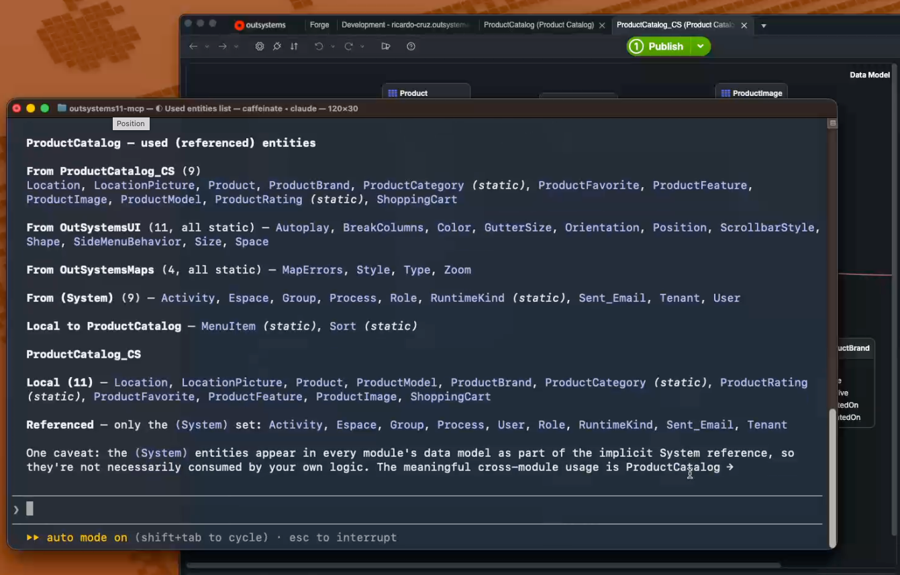
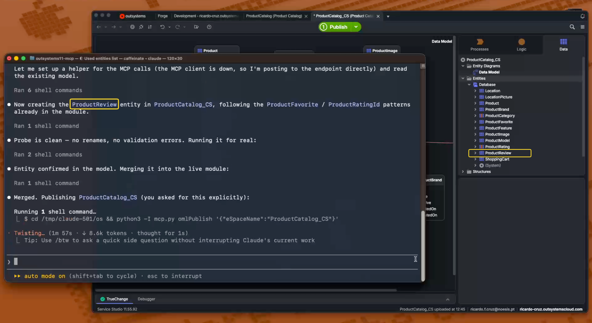
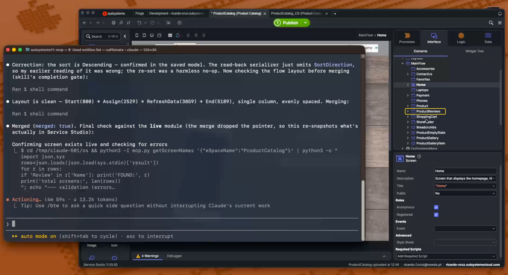

In Part 1 we broke down what MCP is under the hood: a standardized protocol layer between AI agents and the tools they use. The natural follow-up: does it actually work in practice? I pointed Claude Code at a live OutSystems 11 module in Service Studio and recorded what happened.
What follows is the annotated walkthrough. If you would rather watch than read, the full recording is available at the end (~5 min).
1. The setup
For this walkthrough I'm using the ProductCatalog template, a standard OutSystems 11 Reactive Web sample application provided with Service Studio. Nothing was customized, nothing pre-configured for the demo. It's just a template, straight from the New Application dialog.
OutSystems 11 Service Studio(v11.55.91+) comes with an embedded MCP server: a local endpoint that exposes the open module's model through the Model Context Protocol. Claude Code, Anthropic's CLI agent, connects to it over HTTP on localhost and gains access to a catalogue of tools for reading and writing the OML.
The key idea is: you describe what you want in natural language and the agent translates that into Model API calls (the same programmatic interface Service Studio itself uses to manipulate the module) and sends them through the MCP server. The result is merged back into the open module, as if you had made the changes by your hand. No code to write, no files touched.
Three things are required to start a session:
- Service Studio running with the MCP server enabled and the module open. I opened both modules of the app,
ProductCatalog_CS(data and services) andProductCatalog(UI), because the agent tracks each open module separately, and this feature has to land in both. - Claude Code with the Service Studio MCP configured.
- User approval. The MCP server asks you to approve the agent connection before anything happens.
2. Reading the module
The first thing I asked was simple:
Claude connected to the MCP server, obtained a session token, and called listApps, which came back with both open modules, ProductCatalog (Reactive Web) and ProductCatalog_CS. It then called getDataModel on each to read every entity, local and also referenced.

The result: a structured breakdown of every entity the app uses, grouped by source module: the 11 business entities from ProductCatalog_CS (Product, ShoppingCart, ProductBrand, etc.), the two local static entities (MenuItem, Sort), plus all the referenced system and UI framework entities. All from a single question, without opening Manage Dependencies.
3. One prompt, our user story
With the data model understood, I wanted to see what happens if I don't hand the agent a spec, so instead of dictating entities and attribute types, I gave it a user story, reflecting how the work would actually arrive in a sprint:
Implement it in the ProductCatalog app, following its architecture: the data model belongs in ProductCatalog_CS, exposed so the UI module can consume it, and the UI belongs in ProductCatalog — a Reactive screen ProductReviews listing product name, rating, comment, review date and who wrote the review, with pagination. Publish ProductCatalog_CS and refresh references so the screen can use the new entity.
Two things are specified: the business need with the columns the screen should show, and one architecture rule: data in the service module, UI in the UI module, which is how this app is built and the first thing an OutSystems architect would otherwise ask about. The prompt never names the entity, picks a data type, sets a text length, mentions a foreign key, or says the word aggregate. Everything else is a decision the agent has to make, and they are the decisions you'd make yourself before opening the Data tab.
And that's where it started. Before touching the module, Claude worked out that a review needs its own entity, that it has to point at a product and at whoever wrote it, and that "rating" and "review date" imply particular data types. Then it translated those decisions into Model API operations, the same ones Service Studio executes when you create an entity through the visual editor. The difference: no dialogs, no property panels.
Here's what it did, step by step:
The data layer came first:
What Claude designed
| Entity | ProductReview in ProductCatalog_CS · Server Entity, auto-number Long Integer Id, Public and Expose Read Only so the UI module can consume it |
| ProductId | FK to Product · mandatory |
| UserId | FK to User from (System) · mandatory, "who wrote the review" |
| ProductRatingId | FK to the app's existing ProductRating static entity · mandatory |
| Comment | Text, length 2000 · optional, so a star rating on its own is still a valid review |
| ReviewDate | Date Time · mandatory |
Every row in that table is the agent's own choice, not mine. The entity name, a 2000-character Text for a comment, Date Time for the date, which attributes are mandatory: all inferred from one sentence of business language and a read of how the module's existing entities are built. Run it again and it might pick slightly differently. One detail I liked: it didn't commit the entity blind. It ran the whole thing once as a dry run: the same code, ending in a deliberate exception, which hands back TrueChange's verdict on the in-memory model and saves nothing. Zero validation messages, no silently renamed attributes. Only then did it run for real.
The relationships are the part I find most interesting. ProductId and UserId were never requested. They follow from "for a product" and "who wrote the review", and the User one is a reference to the (System) module, exactly the kind you'd set up through the dropdown in the attribute editor.
The rating is the better story, though. Instead of adding a plain Integer column, the agent noticed that ProductCatalog_CS already has a ProductRating static entity (Star1 to Star5, with a label and a value) and pointed the review at it. Nothing in the prompt said "reuse what's already there". It read the data model first, and found it.

4. …and the screen it built
Same prompt. I never typed a second one. Having settled the data model, the agent carried straight on to the UI half of the story, which is the harder part by some distance. Think about what you'd normally do by hand:
- Create a new screen, pick a layout.
- Add a screen aggregate, set the review entity as the source, add a join to Product to get the product name.
- Drag a Table onto the screen, bind it to the aggregate.
- Add Expression widgets in each column for each field.
- Add a Pagination block, wire it to the aggregate's count and page size.
Claude did all of it. Step 2 was never asked for: nothing in the prompt mentions an aggregate or a join. It follows from the fact that the screen has to show a product name, a rating and a user name while the reviews live in their own entity, so the data has to be joined, three times over. The agent worked that out for itself.
Step 5 is where it stopped and asked. OutSystems UI's Pagination block isn't one of the blocks this module consumes, and the agent can't add a dependency (see the trade-offs below). So it laid out the two routes and let me pick: tick the block in Manage Dependencies and use it, or hand-build a pager from native widgets and need no new reference. I took the block, because that's what I'd do on a real project. Which made the tick list two items long: the new entity, and Pagination.
What Claude built
| Screen | ProductReviews in ProductCatalog → MainFlow, with LayoutTopMenu and the app's Menu block, Anonymous + Registered roles |
| Inputs | ProductId and MenuItemId, both mandatory · the same signature the existing Product screen already has |
| Aggregate | GetProductReviewsByProductId: the review entity inner-joined to Product, to (System) User and to ProductRating, filtered on the product, newest first |
| Widget tree | Table → Product · Rating · Review · Date · Reviewer, wrapped in a loading state and an empty state (an OutSystems UI BlankSlate reading “This product has no reviews yet.”) |
| Pagination | The OutSystems UI Pagination block · MaxRecords, TotalCount and StartIndex bound to the aggregate, OnNavigate → a Refresh screen action that assigns the new index and runs Refresh Data |
The screen is where that dry run earned its keep. The first pass came back with 14 validation errors, all from one cause: I had asked for an aggregate named GetProductReviews, and the moment the filter went in, Service Studio renamed it GetProductReviewsByProductId, exactly as it does when you build one by hand. Every expression written against the old name broke. The fix was to read the name back off the model instead of hard-coding it. Second dry run: clean, and nothing had been saved in between.
One more thing this run settled. Within a module the agent chains its edits: each change works on the result of the previous one, and nothing reaches Service Studio until the merge. Whether that merge stops to show you the Compare-and-Merge window or lands silently is your setting, not something the agent picks. For this recording I'd allowed automatic merge and publish, so both merges went straight in. Across modules the chaining doesn't hold. The screen's aggregate consumes an entity from a producer module, and a consumer can only see a producer element that has been published — so the order is forced: merge the entity into ProductCatalog_CS, publish it, and only then build the screen. Two chains, two merges, one per module.
The publish is the agent's to make, but only on your terms: it publishes a module when you ask it to and you've allowed automatic merge and publish in the MCP Server dialog. Leave that off and omlPublish comes back blocked, which is the agent telling you to press 1-Click Publish yourself. I turned it on, so ProductCatalog_CS went to the environment without me touching Service Studio. The publish came back Uploading · Compiling · Deploying · Outdated Consumer · Done — that fourth step being the platform noticing ProductCatalog was now behind.
One step did stay manual, and it's the one no documentation settled for me beforehand: omlRefreshReferences, the equivalent of Manage Dependencies → Refresh All, only updates the versions of elements you already reference. It does not tick a brand-new one. The new entity had to be selected in Manage Dependencies by hand before the aggregate could source it. The agent paused, told me exactly which checkboxes, and carried on when I said it was done. Two clicks, and neither can be delegated.

After the two merges, I went through it in Service Studio. The entity sat in ProductCatalog_CS with its three FK arrows. The screen sat in MainFlow, widget tree and all. The aggregate carried all three joins, with Max Records and Start Index bound to the screen variables, and the Pagination block's OnNavigate wired to a single Refresh action that moves the index and runs Refresh Data. TrueChange on both modules: clean, no errors.
5. What else it can do
The walkthrough above shows the basics: data and UI. The MCP integration reaches a good deal further into the model:
- Server actions with full flow logic: aggregates, If/Else branching, For Each loops, exception handlers, Assign nodes, calls to other actions.
- Client actions: the same flow capabilities, plus screen-action patterns like Refresh Data.
- REST APIs: both exposed (create endpoints with GET/POST/PUT/DELETE methods) and consumed (configure base URLs, request parameters, headers).
- BPT processes: human activities, automatic activities, decision nodes, launch-on-entity triggers.
- Charts and dashboards: donut, bar, column and line charts from OutSystemsCharts, with data binding and styling.
- Traditional Web: the same read and write capabilities, with dedicated tool variants.
- Roles, timers, site properties, structures, exceptions: reachable too.
In one test, a single prompt produced a complete list screen with search, filtering by category, sortable columns, pagination, conditional tags, and an empty-state placeholder — roughly the equivalent of 30 minutes of manual work in Service Studio, done in under two.
6. The trade-offs
This is a Beta Feature, and it has sharp edges. What to know before you try it:
- Can't add new dependencies. The agent can only work with modules and elements already referenced in Manage Dependencies. If you need a Forge component or a new producer, add it manually first. This is a hard wall rather than a soft one: asked to add the reference in code, it comes straight back with
The event IModelServices.ResolveModuleSignature must be set first. It cost this demo two checkboxes — the new entity, and OutSystems UI'sPaginationblock. - Refresh All doesn't add elements. After you publish a producer,
omlRefreshReferencesbrings existing references up to the latest version — but a new public entity still has to be ticked in Manage Dependencies before a consumer can use it. On this run it answered “No references needed refreshing” while the new entity sat there unreferenced. Plan that manual step into any cross-module flow. - Publishing is opt-in, twice over. The agent won't publish unless you ask it to and you've allowed automatic merge and publish in the MCP Server dialog. Otherwise the call comes back
blockedand the 1-Click Publish is yours. That one setting has a cost as well as a benefit: with it on the run is unattended, but the merges stop showing you the Compare-and-Merge diff. You trade the review step for the smoother ride. - Silent renames. The platform renames things under you. A taken name picks up a numeric suffix (
GetProducts2); an aggregate picks up its filter (GetProductReviewsbecomesGetProductReviewsByProductId). Anything already written against the old name is then dangling — 14 errors, in this run. Read names back off the model instead of hard-coding them. - No undo. There is no "rewind by N saves". The session can be reset to the live module, but nothing finer. The merge step gives you a chance to review before accepting.
- Merge depends on your setting. Whether a merge opens the Compare-and-Merge dialog or auto-accepts is your Service Studio configuration, not something the agent passes or can influence. Either way the call only returns once the merge has resolved.
Closing thoughts
Part 1 asked whether MCP is useful or just another protocol. One user story went in and a working feature came out across two modules, so I'd say it earns its place. Once the connection is up you spend your attention on the design decisions and the two or three places the platform does something you didn't ask for.
What it changes is where the time goes. Clicking a screen together in Service Studio is an hour I no longer spend; reading back what the agent decided, and catching the aggregate it renamed behind my back, is twenty minutes I now do spend. You still have to know what to ask for and what a correct answer looks like. Now it’s up to us to decide how to spend that time.
If you want to try it, you'll need Service Studio with the MCP server enabled and Claude Code. And if you missed it, Part 1 covers the protocol foundations.
The recording
The run this walkthrough describes, start to finish: